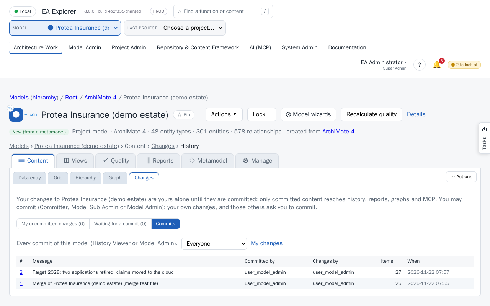

Roll back a commit
For: Model Admin, Practising architects
Undo a whole commit, as a new commit that puts things back.

#/metamodel/{m}/changes/historyWhy do this
When a commit was wrong (a bad load, a mistaken bulk change), rolling it back undoes all of it as a new commit, so the history shows both what happened and that it was undone. See Versions, tags and merging.
Content work is the everyday heart of architecture: recording what exists and what should, and how it all connects. EA Explorer checks it against the metamodel as you go and keeps it as your change until it is reviewed.
In TOGAF terms: Phases B, C and D: recording the building blocks and relationships of the baseline and target architectures. See EA Explorer and the TOGAF Standard.
The goal: A whole commit is undone.
Before you start You need the Committer role or higher.
Steps
- Open the model's History.
- Open the commit; Changed since this commit shows what came after.
- Roll back; confirm.